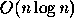

| Searching Quickly |
Searching and sorting are part of the theory and practice of computer science. For example, binary search provides a good example of an easy-to-understand algorithm with sub-linear complexity. Quicksort is an efficient  [average case] comparison based sort.
KWIC-indexing is an indexing method that permits efficient ``human search'' of, for example, a list of titles.
Given a list of titles and a list of ``words to ignore'', you are to write a program that generates a KWIC (Key Word In Context) index of the titles. In a KWIC-index, a title is listed once for each keyword that occurs in the title. The KWIC-index is alphabetized by keyword.
Any word that is not one of the ``words to ignore'' is a potential keyword.
For example, if words to ignore are
``the, of, and, as, a'' and the list
of titles is:
Descent of Man The Ascent of Man The Old Man and The Sea A Portrait of The Artist As a Young Man
A KWIC-index of these titles might be given by:
a portrait of the ARTIST as a young man
the ASCENT of man
DESCENT of man
descent of MAN
the ascent of MAN
the old MAN and the sea
a portrait of the artist as a young MAN
the OLD man and the sea
a PORTRAIT of the artist as a young man
the old man and the SEA
a portrait of the artist as a YOUNG man
The input is a sequence of lines, the string :: is used to
separate the list of words to ignore from the list of titles. Each of
the words to ignore appears in lower-case letters on a line by itself
and is no more than 10 characters in length. Each title appears on a
line by itself and may consist of mixed-case (upper and lower) letters.
Words in a title are separated by whitespace. No title contains more
than 15 words.
There will be no more than 50 words to ignore, no more than than 200 titles, and no more than 10,000 characters in the titles and words to ignore combined. No characters other than 'a'-'z', 'A'-'Z', and white space will appear in the input.
The output should be a KWIC-index of the titles, with each title appearing once for each keyword in the title, and with the KWIC-index alphabetized by keyword. If a word appears more than once in a title, each instance is a potential keyword.
The keyword should appear in all upper-case letters. All other words in a title should be in lower-case letters. Titles in the KWIC-index with the same keyword should appear in the same order as they appeared in the input file. In the case where multiple instances of a word are keywords in the same title, the keywords should be capitalized in left-to-right order.
Case (upper or lower) is irrelevant when determining if a word is to be ignored.
The titles in the KWIC-index need NOT be justified or aligned by keyword, all titles may be listed left-justified.
is the of and as a but :: Descent of Man The Ascent of Man The Old Man and The Sea A Portrait of The Artist As a Young Man A Man is a Man but Bubblesort IS A DOG
a portrait of the ARTIST as a young man the ASCENT of man a man is a man but BUBBLESORT is a dog DESCENT of man a man is a man but bubblesort is a DOG descent of MAN the ascent of MAN the old MAN and the sea a portrait of the artist as a young MAN a MAN is a man but bubblesort is a dog a man is a MAN but bubblesort is a dog the OLD man and the sea a PORTRAIT of the artist as a young man the old man and the SEA a portrait of the artist as a YOUNG man